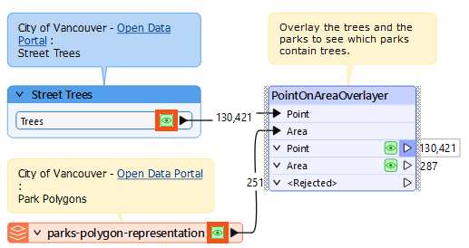
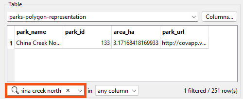
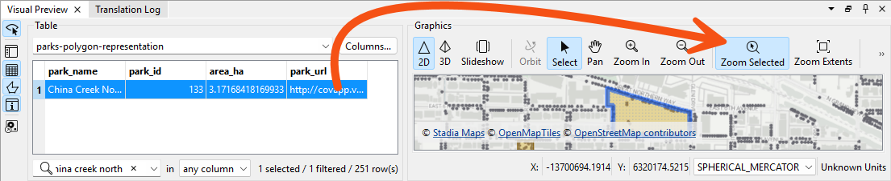
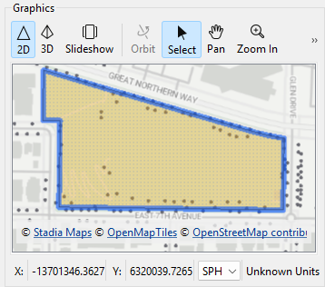
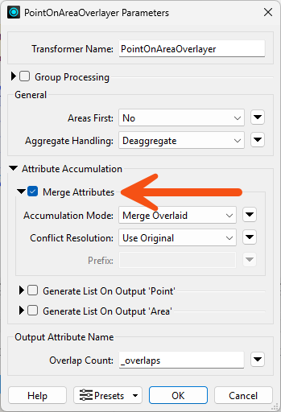
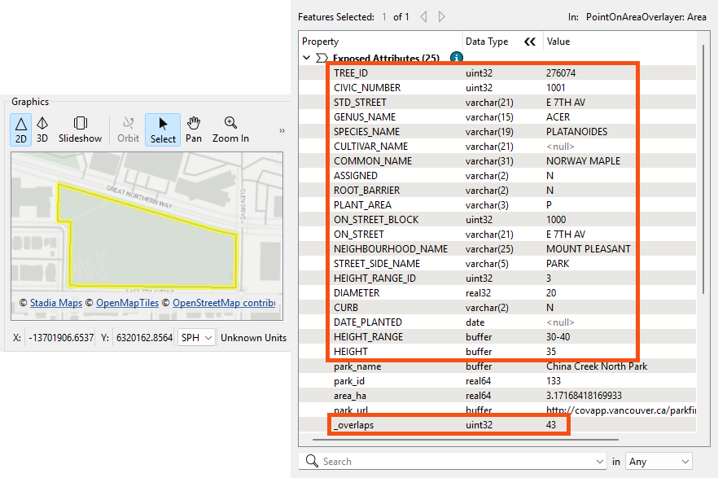
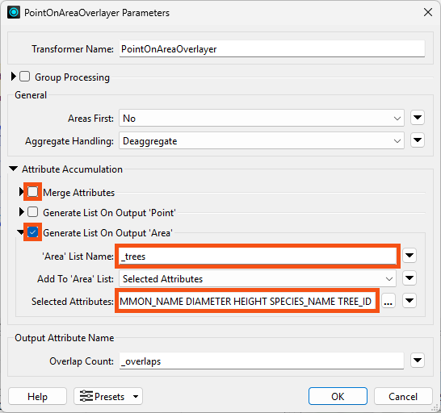
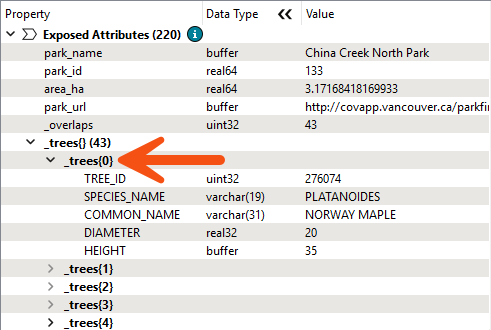

After completing this lesson, you’ll be able to:
Jennifer is ready to put her knowledge of lists into action!
She's been asked to find the most common genus of trees in Vancouver's parks.
She has point data of all the street trees in the city, as well as polygons of the parks. Now she needs to overlay these datasets (what you might know as a spatial join) to add information about each tree to the park polygons.
Jennifer knows that many FME transformers have a Generate List checkbox under the Attribute Accumulation section of their parameters dialog. For example:
For query transformers that can return multiple results, like the PointOnAreaOverlayer, these parameters can be used to generate a list to store the results.
So, Jennifer plans to merge the tree points with the park polygons using the PointOnAreaOverlayer. However, copying attributes from each tree to their respective park polygons isn't enough; what if there is more than one tree per park?
List attributes are perfect for this scenario: if more than one tree falls within the same park polygon, she can use a list attribute to store information for all trees in each park. The PointOnAreaOverlayer allows her to generate a list that stores the values for all points overlaid on the area.
Her goal workspace will:
Jennifer opens the starting workspace (C:\FMEData\Workspaces\AdvancedDataTransformation\create-lists-using-transformers.fmw) in FME Workbench (2025.0.1 or later).
She runs the workspace to generate feature caches.
She inspects the Trees and parks-polygon-representation caches by clicking each cache while holding down the Ctrl or Cmd key:

First, she'd like to visually understand the degree of overlap between the datasets so she can spot-check the list results. She decides to inspect her local park, China Creek North Park.
With the two datasets in Visual Preview, she does the following.
First, she searches for "China Creek North" using the Filter field at the bottom of Table View with the parks-polygon-representation table displayed:

Next, she navigates to the park by selecting the row in Table View and then using the Zoom to Selected Feature button in Graphics View:

Finally, she visually confirms that there are over a dozen trees (the points) within China Creek North Park:

How can she get a list of all trees in each park?
She double-clicks the PointOnAreaOverlayer to open its parameters. By default, the checkboxes under Attribute Accumulation are unchecked, which means the area and point attributes are not being merged, and no list attributes are being created.
She checks Merge Attributes, leaving the other parameters disabled for now:

She clicks OK to close the parameters.
She reruns the workspace and inspects China Creek North Park again using the procedure from step #2.
The PointOnAreaOverlayer added an _overlaps attribute that counts the number of points in each area. In the Feature Information window, we can see that China Creek North Park has 43 overlaps, i.e., trees, but the polygon only has attributes from one of the trees, a Norway Maple:

This is the result of merging the incoming features. The Merge Attributes option can only add attributes from one feature. Because Jennifer wants attributes from multiple features, she must use a list attribute.
She opens the PointOnAreaOverlayer parameters and unchecks Merge Attributes. Instead, she checks Generate List on Output ‘Area’. She names the list _trees and uses Selected Attributes to select the attributes COMMON_NAME, DIAMETER, HEIGHT, SPECIES_NAME, and TREE_ID:

She clicks OK to close the parameters.
She runs the workspace and inspects China Creek North Park again. The Feature Information window shows a list attribute, _trees{}, which contains information from all tree points in the park. She clicks an individual element, _trees{0}, to expand it and view its attribute-value pairs:

She successfully used the PointOnAreaOverlayer to create a list called _trees{}, which stores the values of multiple tree points within each park polygon. She notes how each numbered list element contains the same attributes: COMMON_NAME, DIAMETER, etc.
Now that Jennifer has lists of all the park trees, she can use list transformers to find the most common genus, which she'll do in the next lesson.